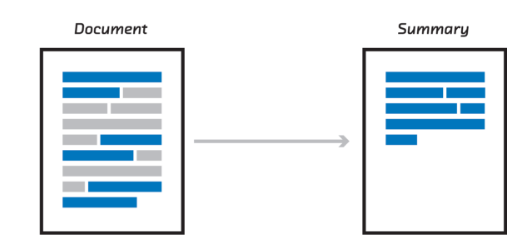
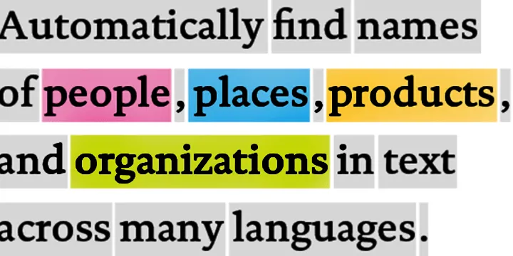

NLP - Natural Language Processing
FEF3001 Yapay zekaya giriş - Ders8
2024-08-01
Contents
- Definition and why we need NLP
- Common NLP Applications
- Text summarization
- Sentiment analysis
- Keyword extraction and association
- Document classification
- Named entity recognition
- Machine translation
- Question answering systems
- Chatbots and conversational AI
- NLP Approaches
- Term-based approaches
- Dictionary-based approaches
- Corpus-based approaches
- Statistical approaches
- Semantic approaches
- Deep learning approaches
Contents (cont’d)
- Preprocessing Steps in NLP: Text cleaning and normalization, Tokenization, Stop word removal, Stemming and lemmatization, Part-of-speech (POS) tagging, Syntax analysis and parsing, Named entity recognition
- Feature Extraction and Representation: Bag of Words (BoW) model, Term Frequency-Inverse Document Frequency (TF-IDF), N-gram models, Word embeddings (Word2Vec, FastText), Contextual embeddings (e.g., BERT, GPT)
Definition
Natural Language Processing (NLP) is a branch of artificial intelligence that focuses on the interaction between computers and human language. It combines computational linguistics, machine learning, and deep learning techniques to enable computers to understand, interpret, generate, and respond to human language in a valuable way. NLP aims to bridge the gap between human communication and computer understanding by processing and analyzing large amounts of natural language data. This field encompasses various tasks such as speech recognition, text analysis, language translation, sentiment analysis, and text generation, allowing machines to derive meaning from human languages and respond in a way that is both meaningful and contextually appropriate.
Why NLP?
Natural Language Processing (NLP) is crucial because text data is fundamentally different from the structured numerical and categorical data typically used in traditional machine learning tasks. Here’s why NLP is necessary:
- Unstructured nature of text: Unlike tabular data where each column represents a specific feature, text is inherently unstructured. A sentence or document doesn’t come with predefined features or categories. This unstructured nature makes it challenging for computers to directly process and analyze text data.
- High dimensionality: Text data can be extremely high-dimensional. In a bag-of-words model, for instance, each unique word in the corpus becomes a feature. This can lead to thousands or even millions of dimensions, far exceeding what’s typically seen in structured data problems.
- Semantic complexity: Words and phrases can have multiple meanings depending on context. For example, “bank” could refer to a financial institution or the side of a river. Traditional ML models aren’t equipped to handle this semantic complexity without NLP techniques.
Why NLP?
- Syntactic variability: The same meaning can be expressed in many different ways in natural language. For example, “The cat sat on the mat” and “On the mat sat the cat” convey the same information but have different word orders. ML models need NLP techniques to understand these variations.
- Dealing with noise: Text data often contains “noise” such as spelling errors, informal language, or irrelevant information. NLP provides methods to clean and preprocess this data, making it suitable for analysis.
- Feature extraction: Unlike numerical data where features are explicit, textual features need to be extracted. NLP provides techniques like TF-IDF, word embeddings, and topic modeling to convert text into meaningful numerical representations that ML models can work with.
- Handling sequence information: Many ML models assume independence between features, but in text, the order of words matters. NLP techniques like recurrent neural networks or transformers are designed to capture this sequential information.
Why NLP?
- Multilingual challenges: Text data can come in multiple languages, each with its own rules and nuances. NLP provides tools for language detection, translation, and cross-lingual analysis.
- Dealing with context: Understanding text often requires grasping context beyond the immediate words. NLP techniques help in capturing and utilizing this broader context.
In essence, NLP is needed because it provides the necessary tools and techniques to transform the rich, complex, and unstructured nature of human language into a form that computers can process effectively. It bridges the gap between the way humans communicate and the way machines process information, enabling a wide range of applications from sentiment analysis to machine translation, chatbots, and beyond.
Why NLP?
Also, recordings is a text input after Speech2Text processing
Common NLP Applications - Summarization
Text summarization is an NLP application that condenses large volumes of text into brief, coherent summaries. For humans, summarizing involves understanding context, identifying key points, and rephrasing ideas - tasks that come naturally to us. However, for computers, this process is remarkably complex. A computer must analyze the text’s structure, grasp semantic meanings, determine the relative importance of different sentences or concepts, and then generate or extract a coherent summary. This requires sophisticated algorithms to mimic human-like understanding of language, context, and relevance. The challenge lies in teaching machines to distinguish between crucial information and extraneous details, a task that involves not just processing words, but understanding their relationships and significance within the broader context of the document.
Common NLP Applications - Sentiment Analysis
Sentiment analysis is an NLP technique that aims to determine the emotional tone behind a piece of text. While humans can often intuitively sense the sentiment in a statement, for computers, this task is surprisingly complex. A computer must go beyond simple keyword matching to grasp the overall emotional context. For instance, the phrase “This movie is sick!” could be positive or negative depending on the context and speaker.
Please visit https://hedonometer.org which tracks happiness in US using Twitter/X
Common NLP Applications - Named Entity Recognition
is an NLP technique that seeks to locate and classify named entities in text into predefined categories such as person names, organizations, locations, medical codes, time expressions, quantities, monetary values, percentages, etc. While humans can easily identify and categorize these entities in text, for computers, this task presents great challenges.
Please visit Geeks4Geeks Named Entity Recognition for demonstration.
NLP Approaches - Term based
Term-based approaches in NLP represent one of the fundamental methods for processing and analyzing text data. These approaches treat individual words or terms as the basic units of analysis. The core idea is to represent documents as collections of terms, often disregarding grammar and word order but keeping multiplicity. A common implementation is the “bag-of-words” model, where each document is represented as a vector of term frequencies. While simple, this method can be surprisingly effective for many tasks like document classification or information retrieval. However, term-based approaches face challenges with synonymy (different words with the same meaning) and polysemy (same word with multiple meanings). They also struggle to capture context and relationships between words. Despite these limitations, term-based methods serve as a foundation for more advanced NLP techniques and remain relevant in many applications due to their computational efficiency and interpretability
NLP Approaches - Dictionary based
Dictionary-based approaches in NLP rely on pre-existing lexical resources, such as dictionaries, thesauri, or ontologies, to process and analyze text. These methods leverage human-curated knowledge bases to understand and interpret language. In essence, they attempt to mimic how humans use dictionaries to comprehend unfamiliar words or concepts. For instance, in sentiment analysis, a dictionary-based approach might use a lexicon of words labeled with their associated sentiments.
NLP Approaches - Corpus based
Corpus-based approaches in NLP rely on large collections of text data, known as corpora, to derive linguistic knowledge and patterns. Unlike dictionary-based methods that depend on pre-existing knowledge bases, corpus-based approaches learn from real-world language usage. These methods use statistical techniques to analyze how words and phrases are used in context across vast amounts of text. For example, word embeddings like Word2Vec or GloVe use neural networks to learn vector representations of words based on their co-occurrence patterns in large corpora.
Corpus-based methods excel at capturing nuances in language use, handling ambiguity, and adapting to different domains or languages. They’re particularly powerful for tasks like language modeling, machine translation, and text generation.
NLP Approaches - Semantic based
Semantic approaches in NLP focus on understanding the meaning of language, rather than just its structure or statistical patterns. These methods aim to capture and represent the underlying concepts and relationships in text, mirroring human comprehension. Semantic approaches often utilize knowledge graphs, ontologies, or semantic networks to model relationships between concepts. For example, in a biomedical context, a semantic approach might understand that “aspirin” is a type of “pain reliever” which “treats” “headaches”. These methods can handle complex queries, infer new knowledge, and understand context-dependent meanings.
NLP Preprocessing steps
Text cleaning and normalization:
This initial step involves preparing raw text data for analysis by removing or standardizing elements that could interfere with processing. It typically includes tasks like converting text to lowercase to ensure consistency, removing special characters or punctuation that aren’t relevant to the analysis, and handling formatting issues. For instance, in social media text, it might involve expanding contractions (e.g., “don’t” to “do not”), correcting common misspellings, or converting emojis to text descriptions. The goal is to create a standardized, “clean” version of the text that retains its essential meaning while reducing noise and variations that could complicate analysis.
Tokenization
Tokenization is the process of breaking down text into smaller units called tokens, typically words or subwords. While it might seem straightforward, tokenization can be complex due to language-specific challenges. For example, in English, we might split on whitespace and punctuation, but this approach fails for languages like Chinese that don’t use spaces between words. Tokenization also involves decisions about how to handle contractions, hyphenated words, or multi-word expressions. The choice of tokenization method can significantly impact downstream NLP tasks, as it defines the basic units of meaning that the model will work with.
Stop word removal
Stop words are common words (like “the”, “is”, “at”, “which”) that are usually filtered out from text processing because they typically don’t carry significant meaning on their own. Removing them can help reduce noise in the data and focus the analysis on the more meaningful content words. However, the definition of what constitutes a stop word can vary depending on the specific application or domain. For instance, in sentiment analysis, words like “not” that are often considered stop words can be crucial for understanding the meaning. Therefore, while stop word removal can improve efficiency and reduce noise, it requires careful consideration of the specific NLP task at hand.
Stemming and lemmatization
These techniques aim to reduce words to their base or dictionary form, which helps in treating different word forms as a single item. Stemming is a crude heuristic process that chops off the ends of words, often resulting in non-words (e.g., “running” becomes “run”, but “universe” becomes “univers”). Lemmatization, on the other hand, uses vocabulary and morphological analysis to return the dictionary form of a word (e.g., “running” becomes “run”, “am” becomes “be”). While stemming is faster and simpler, lemmatization provides more accurate results. The choice between them depends on the specific requirements of the NLP task, balancing between processing speed and linguistic accuracy.
Part-of-speech (POS) tagging
POS tagging involves labeling each word in a text with its appropriate part of speech (noun, verb, adjective, etc.), based on both its definition and context. This process is crucial for understanding the grammatical structure of sentences and can significantly aid in tasks like named entity recognition or syntactic parsing. Modern POS taggers often use machine learning models trained on large annotated corpora and can achieve high accuracy. However, they can still face challenges with ambiguous words (e.g., “record” can be a noun or a verb) or in handling domain-specific language where words might be used in unconventional ways.

| Part Of Speech | Tag |
|---|---|
| Noun (Singular) | NN |
| Noun (Plural) | NNS |
| Verb | VB |
| Determiner | DT |
| Adjective | JJ |
| Adverb | RB |
Syntax analysis and parsing
This technique involves analyzing the grammatical structure of sentences to understand how words relate to each other. It typically produces a parse tree or dependency graph representing the sentence structure. There are two main approaches: constituency parsing, which breaks sentences into nested constituents (phrases), and dependency parsing, which identifies grammatical relationships between individual words. Parsing is crucial for tasks that require understanding sentence structure, like machine translation or question answering. However, it can be computationally intensive and faces challenges with ambiguous sentences or non-standard language use.
Please visit the following links: link1
Feature Extraction and Representation Techniques in NLP
Bag of Words (BoW) model:
The Bag of Words model is a simple yet effective method for representing text as numerical features. It creates a vocabulary of all unique words in the corpus and represents each document as a vector of word frequencies. The order of words is disregarded, hence the name “bag”. While BoW is computationally efficient and easy to understand, it loses all information about word order and context. It also struggles with out-of-vocabulary words and can result in very high-dimensional, sparse vectors for large vocabularies. Despite these limitations, BoW remains useful for many text classification tasks and serves as a foundation for more advanced techniques.
Term Frequency-Inverse Document Frequency (TF-IDF):
TF-IDF is a statistical measure used to evaluate the importance of a word in a document within a collection or corpus. It combines two metrics: Term Frequency (how often a word appears in a document) and Inverse Document Frequency (how rare the word is across all documents). The idea is that words frequently occurring in a document but rare in the overall corpus are likely more important for that document. TF-IDF helps to reduce the impact of common words that appear frequently across all documents but carry little meaning. This method provides a more nuanced representation than simple word counts, making it valuable for tasks like information retrieval and document ranking.
Please visit this link for demonstration.
N-gram models:
N-gram models extend the idea of BoW by considering sequences of N adjacent words, rather than individual words in isolation. For example, a bigram (2-gram) model would consider pairs of adjacent words, while a trigram (3-gram) model would look at sequences of three words. N-grams capture some local context and word order information, which can be crucial for tasks like language modeling or machine translation. However, as N increases, the model’s complexity and data sparsity issues also increase. N-gram models strike a balance between the simplicity of BoW and the need to capture word relationships, making them useful in various NLP applications.
Word embeddings (Word2Vec, GloVe, FastText):
Word embeddings are dense vector representations of words in a continuous vector space, where semantically similar words are mapped to nearby points. Unlike BoW or TF-IDF, which produce sparse, high-dimensional vectors, word embeddings typically have a few hundred dimensions. Models like Word2Vec learn these representations by analyzing word co-occurrences in large corpora, capturing semantic relationships (e.g., “king” - “man” + “woman” ≈ “queen”). FastText extends this idea to subword units, allowing it to generate embeddings for out-of-vocabulary words. These dense representations significantly improve performance on various NLP tasks and allow for interesting word algebra. However, they struggle with polysemy (words with multiple meanings) as each word has a single, fixed representation regardless of context.
Contextual embeddings (e.g., BERT, GPT):
Contextual embeddings represent a significant advancement over traditional word embeddings by generating different representations for a word based on its context in a sentence. Models like BERT (Bidirectional Encoder Representations from Transformers) and GPT (Generative Pre-trained Transformer) use deep learning architectures to process entire sentences or documents simultaneously, capturing complex, bidirectional relationships between words. These models are pre-trained on vast amounts of text data and can be fine-tuned for specific tasks. Contextual embeddings excel at capturing nuanced meanings, handling polysemy, and understanding long-range dependencies in text. They have set new state-of-the-art benchmarks on various NLP tasks. However, they are computationally intensive and require significant resources to train and deploy, presenting challenges for applications with limited computational power or real-time requirements.